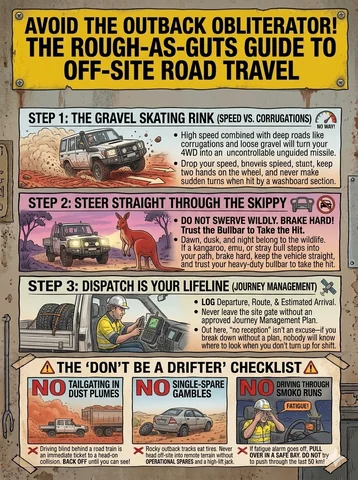
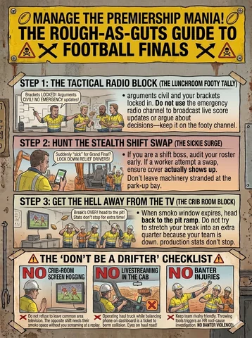

Find your way round
Browse the audiences, explore the source material or see how an idea becomes a useful picture.
The whole place, minus the wandering around.
New editions and topics are in development. The library holds the original source deck; Systems explains the working process behind clearer copy and better image briefs.
Home
The gift premise, the overall idea and a taste of the humour.
- For someone whose habits drive you nuts—and who you still quite like.
- See proposed audiences, topics and formats.
Men
A proposed adult edition covering relationships, exercise, home skills, parenting and travel.
- Recognisable bloke behaviour.
- Sample gags and useful everyday themes.
Women
A proposed adult edition with a broad range of characters, situations and everyday rough edges.
- Dating, exercise, shared responsibilities, parenting and travel.
- Sample gags with warmth and bite.
Young Crew
School-appropriate concepts for growing independence and everyday skills.
- Home, school, messages, friends and getting ready.
- Respectful humour and manageable next actions.
Workplace
Mine-and-camp ideas, possible formats and the review a workplace adaptation needs.
- Posters, briefings, cards, booklets and manual illustrations.
- Proposed support for reviewed procedures and SWMS material.
Library
The original 45-slide deck and a structured catalogue of its contents.
- Source words, panels, scenes and checklists.
- Unclear lettering, source issues and unverified claims identified.
Systems
A practical development workflow and a short image-brief form.
- Capture observations, compare jokes and blend ideas.
- Brief, review, revise and adapt the result.
About & provenance
Where the material begins, what the project is exploring and how to read its status.
- Original archive and proposed new work.
- AI imagery and human editorial decisions.
Sitemap
You are here. A rare planning success.
- All nine pages in one place.
Every page
- Home
Funny picture guides for the habits that make families, mates and co-workers say, “How have you survived this long?”
- Men
Dating, dinner, fitness, parenting and travel—plus the fine art of being useful before someone has to ask three times.
- Women
Everyday chaos deserves a good joke and a useful way through it. Dating, exercise, home life, parenting and travel are all on the drawing board.
- Young Crew
Funny, practical picture guides for the everyday things nobody is born knowing.
- Worksites
Workshop posters, mine camps, shared facilities and the familiar moment when enthusiasm gets ahead of thought.
- Original library
The starting material: big headlines, Australian comic humour, mine life, camp life and everyday rough edges.
- The system
A practical way to collect observations, blend ideas, check the useful point and turn them into pictures that say what we mean.
- Origins & licence
Rough as Guts is a developing collection of funny illustrated ideas about habits, practical skills and getting along.
- Site map
Browse the audiences, explore the source material or see how an idea becomes a useful picture.
Downloads
Complete structured catalogueReadable catalogue
Original-image provenance
New-image prompts and provenance
From Daz’s original pile
Original draft examples. Open the source record for readable text and source notes.


